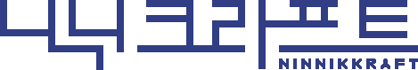

가야 김아영과 상상세계 ‘니닉’
가야 김아영은 스토리텔링을 바탕으로 도예·회화·디지털 미디어를 넘나들며, 고유한 감성으로 빚어낸 상상세계 ‘니닉’의 이야기를 펼칩니다.

© 가야 김아영가야 김아영은 스토리텔링을 바탕으로 도예·회화·디지털 미디어를 넘나들며, 고유한 감성으로 빚어낸 상상세계 ‘니닉’의 이야기를 펼칩니다.

‘니닉크라프트’는 새로운 세계 ‘니닉(Ninnik)’과 기술·힘·탈것을 아우르는 ‘크라프트(Kraft)’를 조합한 이름입니다. 배를 닮은 건물 모습에서 착안했으며, 창작 여정이 순항하기를 바라는 마음을 담았습니다.
강원도 원주시 문막읍 원문로 1734-15